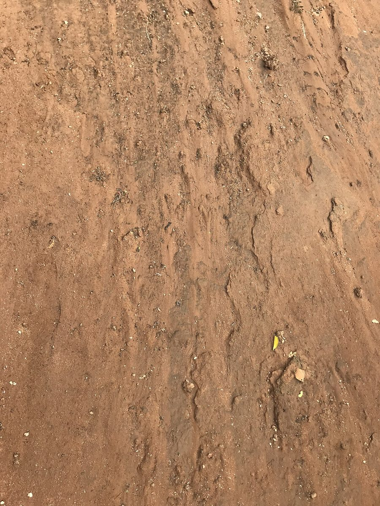

店のこと
店のこと
お店について確認できているのは、所在地とInstagramのアカウントだけです。
このページの「想像してみる」部分は、制作側が想像して書いたものです。お店の実際の様子・考え・メニューとは関係がありません。
確認できていること
- 店名は「ジェラートカフェ雨土舎」、業種はカフェ(ジェラート)
- 所在地は栃木県真岡市台町2390-5(〒321-4306)
- 電話番号はなし。連絡はInstagramから
- 営業時間・定休日・メニュー・価格・ご予約・駐車場は準備中


制作側が想像してみる
「雨」「土」「舎」と並ぶ屋号を見て、制作側は、しずくと土と、ひと息つける場所を思い浮かべました。ただの連想で、屋号の意味は分かりません。
お店の考えや、お店で過ごす時間のことは、ここには書きません。Instagramでご確認ください。